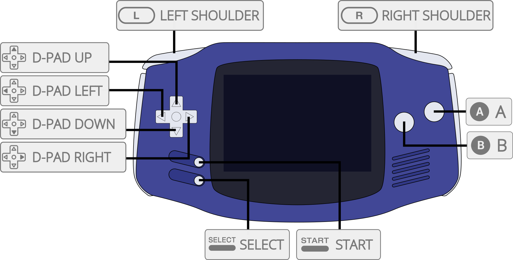

mGBA is an emulator for running Game Boy Advance games. It aims to be faster and more accurate than many existing Game Boy Advance emulators, as well as adding features that other emulators lack. It also supports Game Boy and Game Boy Color games.
The mGBA core has been authored by
The mGBA core is licensed under
A summary of the licenses behind RetroArch and its cores can be found here.
Required or optional firmware files go in the frontend's system directory.
!!! warning In order for the BIOS to be used, the 'Use BIOS file if found' core option must be set to On.
| Filename | Description | md5sum |
|---|---|---|
| gba_bios.bin | Game Boy Advance BIOS - Optional | a860e8c0b6d573d191e4ec7db1b1e4f6 |
| gb_bios.bin | Game Boy BIOS - Optional | 32fbbd84168d3482956eb3c5051637f5 |
| gbc_bios.bin | Game Boy Color BIOS - Optional | dbfce9db9deaa2567f6a84fde55f9680 |
| sgb_bios.bin | Super Game Boy BIOS - Optional | d574d4f9c12f305074798f54c091a8b4 |
Content that can be loaded by the mGBA core have the following file extensions:
RetroArch database(s) that are associated with the [Core name] core:
Frontend-level settings or features that the mGBA core respects.
| Feature | Supported |
|---|---|
| Restart | ✔ |
| Saves | ✔ |
| States | ✔ |
| Rewind | ✔ |
| Netplay | ✕ |
| Core Options | ✔ |
| RetroAchievements | ✔ |
| RetroArch Cheats | ✔ |
| Native Cheats | ✕ |
| Controls | ✔ |
| Remapping | ✔ |
| Multi-Mouse | ✕ |
| Rumble | ✔ |
| Sensors | ✕ |
| Camera | ✕ |
| Location | ✕ |
| Subsystem | ✕ |
| Softpatching | ✔ |
| Disk Control | ✕ |
| Username | ✕ |
| Language | ✕ |
| Crop Overscan | ✕ |
| LEDs | ✕ |
The mGBA core's library name is 'mGBA'
The mGBA core saves/loads to/from these directories.
Frontend's Save directory
| File | Description |
|---|---|
| *.srm | Cartridge battery save |
Frontend's State directory
| File | Description |
|---|---|
| *.state# | State |
The mGBA core has the following option(s) that can be tweaked from the core options menu. The default setting is bolded.
Settings with (Restart) means that core has to be closed for the new setting to be applied on next launch.
Solar sensor level [mgba_solar_sensor_level] (0|1|2|3|4|5|6|7|8|9|10)
Can be used by games that employed the use of a solar sensor on their cartridges. E.g.: Boktai games.
Allow opposing directional input [mgba_allow_opposing_directions] (OFF|ON)
Allows opposing directional inputs. Up with Down. Right with Left.
Game Boy model (requires restart) [mgba_gb_model] (Autodetect|Game Boy|Super Game Boy|Game Boy Color|Game Boy Advance)
Runs loaded content with a specific Game Boy model.
Autodetect will select the most appropriate model for the current game.
Use BIOS file if found [mgba_use_bios] (ON|OFF)
Uses BIOS present in RetroArch's system directory. Look at the BIOS section for more information.
Skip BIOS intro [mgba_skip_bios] (OFF|ON)
The 'Use BIOS file if found' core option must be set to On for proper operation.
Skips the BIOS intro when a BIOS is present in RetroArch's system directory is used.
??? note "Skip BIOS intro - Off"
Use Super Game Boy borders (requires restart) [mgba_sgb_borders] (ON|OFF)
Display Super Game Boy borders for Super Game Boy enhanced games.
Idle loop removal [mgba_idle_optimization] (Remove Known|Detect and Remove|Don't Remove)
Optimizes game performance by driving the GBA's CPU less hard.
Use this on low-powered hardware if its struggling with game performance.
Frameskip [mgba_frameskip] (0|1|2|3|4|5|6|7|8|9|10)
Choose how much frames should be skipped to improve performance at the expense of visual smoothness.
Rumble only works in the mGBA core when

| User 1 input descriptors | RetroPad Inputs |
|---|---|
| B |  |
| Turbo B |  |
| Select |  |
| Start |  |
| Up |  |
| Down |  |
| Left |  |
| Right |  |
| A |  |
| Turbo A |  |
| L |  |
| R |  |
| Turbo L |  |
| Turbo R |  |
| Darken Solar Sensor |  |
| Brighten Solar Sensor |
Please file game bugs on the issue tracker here